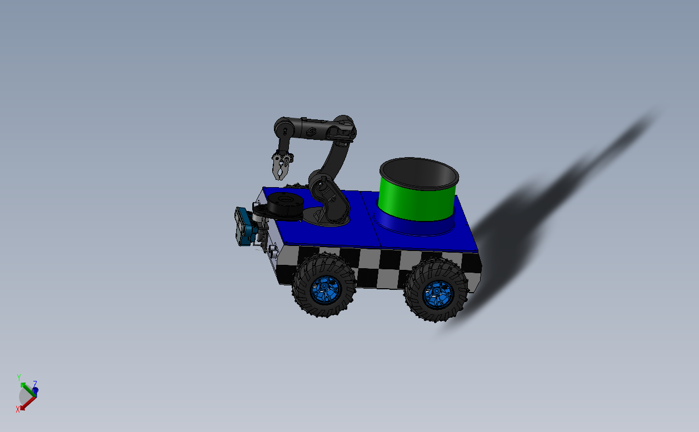
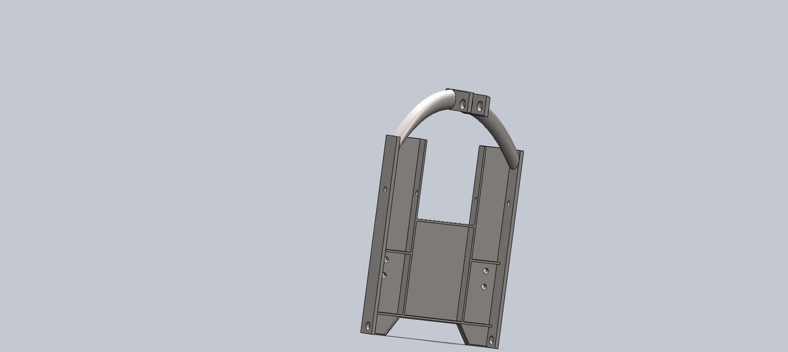
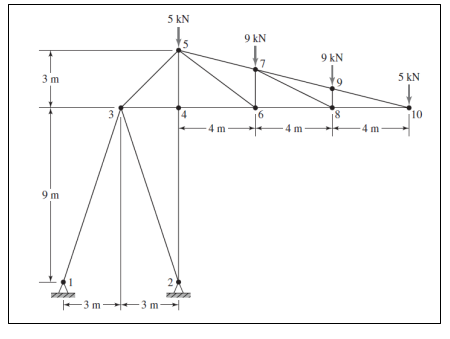
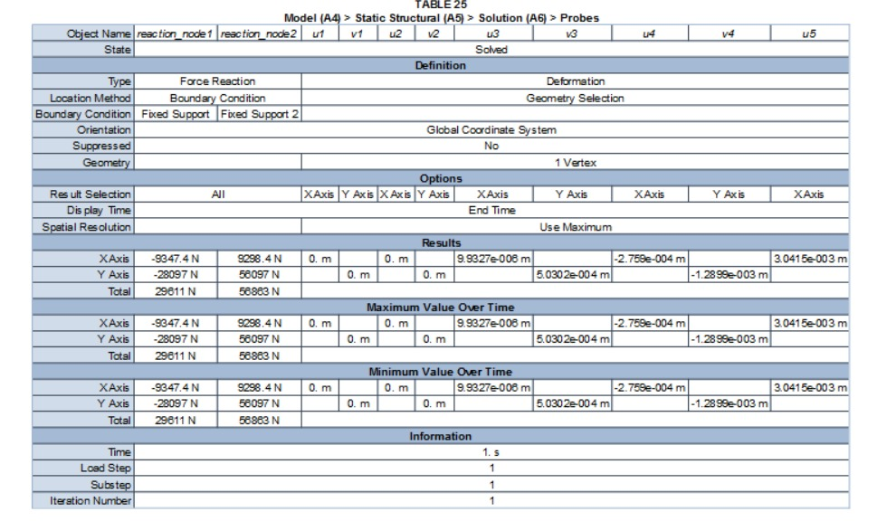
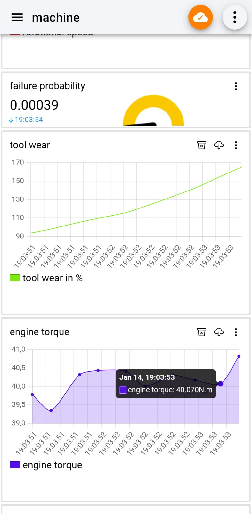
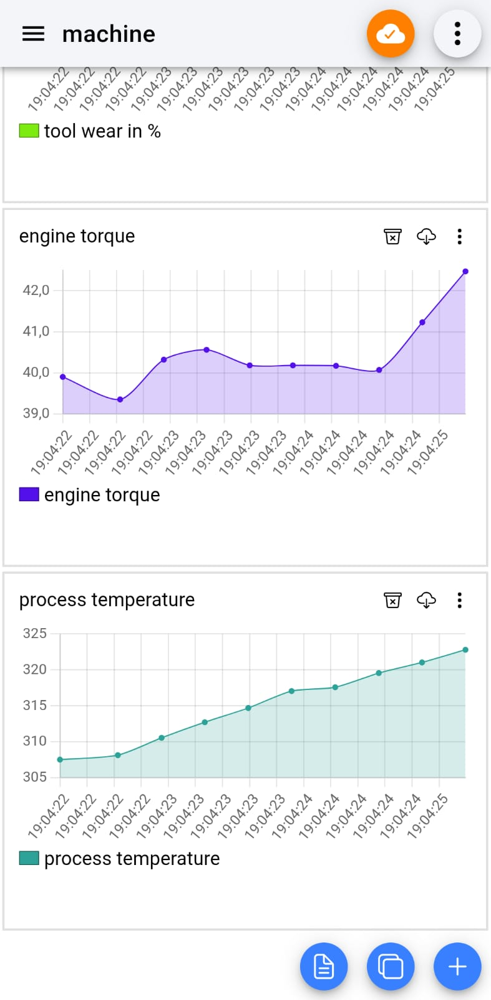
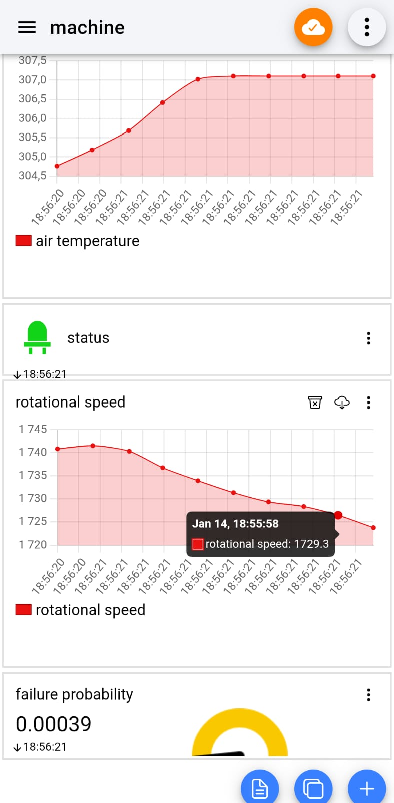

I'm a Robotics Software and Simulation Engineer with a Master's degree in Mechanics, Robotics, and Innovative Materials. My thesis internship gave me hands-on experience in mechanical modeling and numerical simulation, and I have solid practical experience with the ROS 2 navigation stack, MoveIt 2 for robot motion planning and test automation.
My work sits at the intersection of mechanical design and robotic autonomy.
During my Master's thesis, I designed and built a mobile manipulator for agricultural applications.
I designed and modeled a mobile manipulator for agricultural applications (CAD & URDF), implemented autonomous navigation and manipulation using Nav2 and MoveIt 2, and built the decision-making architecture with BehaviorTree.CPP.
I conducted a feasibility study and concept generation phase, then performed full CAD modeling of a snow plow in SolidWorks and validated the design through structural analysis using Ansys Mechanical.
Master's thesis internship — I designed and modeled the robot in CAD and URDF, implemented autonomous navigation and manipulation using Nav2 and MoveIt 2, and built the decision-making architecture with BehaviorTree.CPP.

BSc. internship in Mechanical Design and Manufacturing.

During this academic project, we simulated an industrial bottle feeding and filling process in ABB RobotStudio, coordinating two ABB robots and two conveyor belts to automate the full production sequence.
For this academic project, we used MATLAB to perform structural analysis of truss structures.


For this academic project, we modeled the temperature distribution in a heated room.
For this significant academic project, we built a machine learning pipeline to predict equipment failures in a production line.
View on GitHub →

